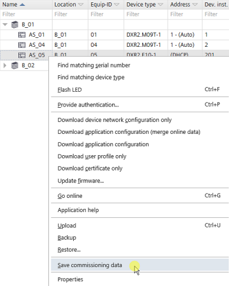

保存调试数据

为了在 ABT 站点中提供调试和诊断信息，必须首先读取数据并将其保存到项目中。
要查看保存的信息，请访问Startup > Commissioning and diagnostics.
Commissioning and diagnostics

Save commissioning data
- At least one device must be connected.
Connecting to devices
- Open the Startup > Configure and download task.
- In the Engineered devices tab, select a device.
- Right-click and select Save commissioning data.
- Click OK.
- The data is now available in ABT Site.
- To view the saved information, go to Startup > Commissioning and diagnostics.